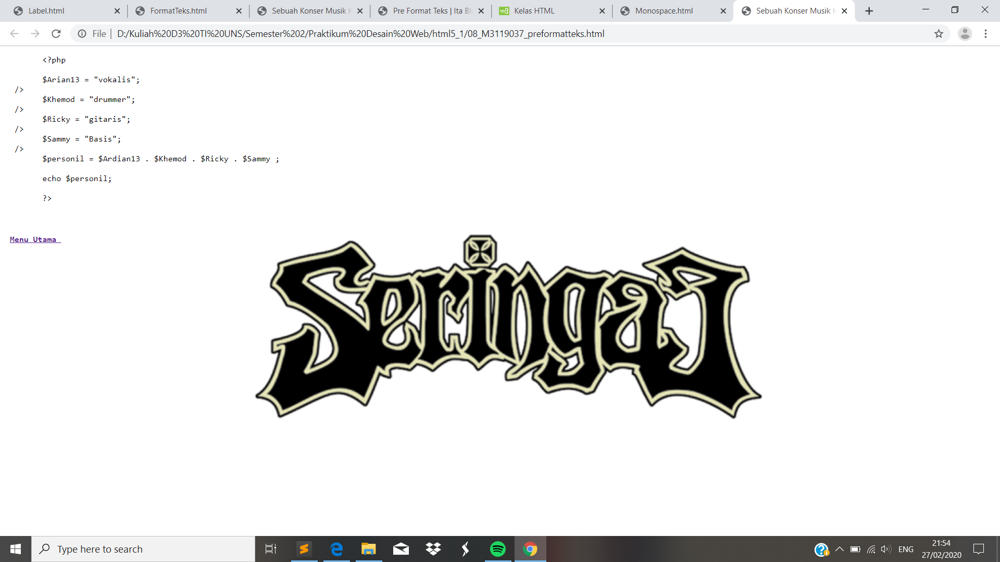

Pre Format Teks
//Pada percobaan Pre Format Teks sebenarnya hampir mirip dengan Monospace Font. Untuk perintah yang digunakan yakni <pre> dan </pre>
Codingan
<!DOCTYPE html>
<html>
<head>
<meta charset="UTF-8">
<title>Sebuah Konser Musik Kontemporer </title>
</head>
<body style ="background:url(seringai2.png); background-repeat: no-repeat; background-size: cover;">
<pre>
&lt;?php<br />
$Arian13 = &quot;vokalis&quot;;<br> />
$Khemod = &quot;drummer&quot;;<br> />
$Ricky = &quot;gitaris&quot;;<br> />
$Sammy = &quot;Basis&quot;;<br> />
$personil = $Ardian13 . $Khemod . $Ricky . $Sammy ;<br />
echo $personil; <br />
?&gt;
</prei>
Tampilan Hasil Percobaan

Kesimpulan
Pada percobaan Pre Format Teks sebenarnya mirip sekali dengan Monospace. Hanya saja pada Pre Formatnya menghasilkan tampilan yang lebih terlihat rampi karena terdapat jarak yang cukup lebar.Dan juga perintah/tag yang digunakan Pre Format Teks dan Monospace juga berbeda.